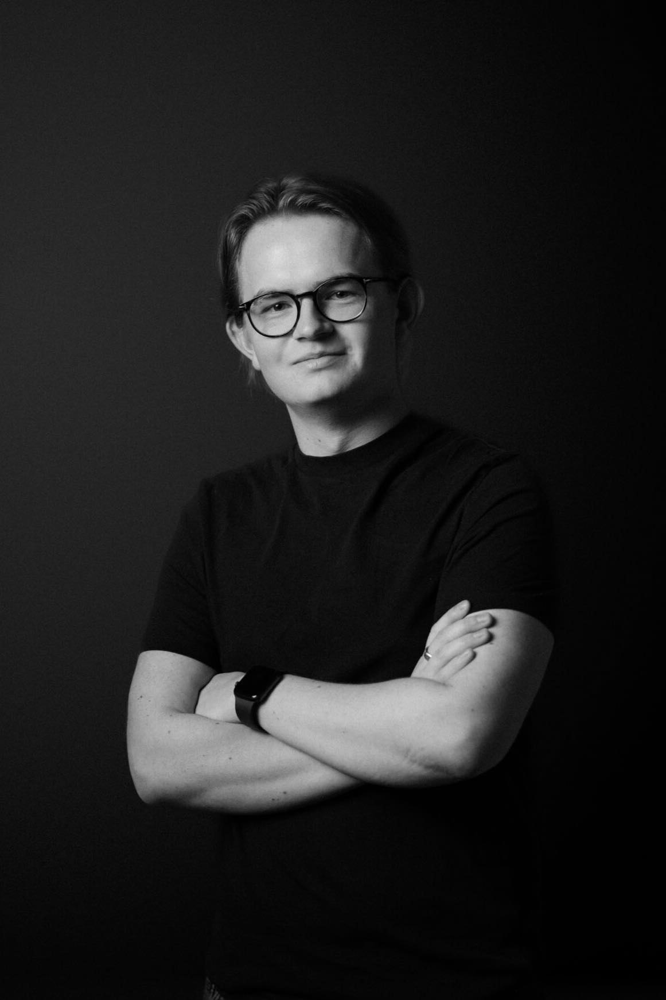

NANNA ISABELLA HJORSLEV, INSTRUKTØR
Nanna er 21 år og bosat i Silkeborg.
Til dagligt studerer hun multimediedesigner på Erhvervsakademiet i Århus.
Derudover er hun freelance skribent for filmsiden og en del af vores bestyrelse.
Nanna har en forkærlighed for gysergenren og drømmer om at bringe gyset til Danmark.
Selvom der er mange gyserfilm på listen over hendes yndlingsfilm nævner hun "La La Land" som værende favoritten,
fordi den lader hende drømme sig væk i filmverdenens magi.
nanna@filmkollektivet.dk

JONAS SUNDROOS, KLIPPER
Jonas er 24 år og bosat i Aarhus. Til dagligt går han på FTP i Viborg.
Jonases yndlingsfilm er “Lord Of The Rings” - den klipper mellem mange forskellige karakterer
og forløb på en meget spændende måde. Måske er det også derfor at Jonas drømmer om en dag at klippe en fantasy film.
jonas@filmkollektivet.dk

FREDERIKKE SMED MIKKELSEN, FOTOGRAF
Frederikke er 24 år og bosat i Odense. Til dagligt arbejder hun som nyhedsfotograf hos TV2.Frederikkes yndlingsfilm er "Narnia".
Selv siger hun: Filmen kan måske virke en tand forældet; rent teknisk,men nostalgien og historien vil aldrig fejle mig.
frederikke@filmkollektivet.dk

JACOB PEDERSEN, INSTRUKTØR
Jacob er 21 år og bosat i København. Til dagligt læser han film- og medievidenskab.
Hans yndlingsfilm er “Force Majeure” som efter hans mening har den bedste effekt en film overhovedet kan have - Den starter en debat
jacob@filmkollektivet.dk

MILENA BESWICK REPPIEN KRISTENSEN, DOKUMENTAR INSTRUKTØR
Milena er 24 år og bosat i Aarhus.Til dagligt læser hun til journalist på Danmarks medie- og journalisthøjskole.
Hun har en forkærlighed for at lave dokumentarfilm
og instruere!Hendes vej ind i filmverdenen var igennem skuespil
og derfor er hendes ynglingsfilm “The greatest showman”
som har en helt speciel måde at holde drømme i live igennem fortællingen,hvor ingen ambitioner er for store.
milena@filmkollektivet.dk

LASSE GOTTLIEB KARSTENSEN, INSTRUKTØR
Lasse er 20 år og bosat i København.
Til dagligt arbejder han som videojournalist i Forsvaret.
Lasse er glad for personlige historier,hvor man tydeligt kan mærke karaktererne
og hvor alle deres valg har en afgørende betydning for filmen.Hans yndlingsfilm er “Green Room”
lasse@filmkollektivet.dk

DENNIS LE, MANUSKRIPTFORFATTER
Dennis er 23 år og bosat i Århus.Til dagligt arbejder han hos Wolt
og stræber efter at skrive en massehistorier sideløbende. Dennises yndlingsfilm er “Birdman”
pga dens realisme og hovedkarakterens indre kamp om ikke at blive glemt og forblive interessant.
dennis@filmkollektivet.dk

JULIE VOHNSEN, PRODUCER
Julie er 21 år og er bosat i Århus.
Til dagligt studerer hun på Multiplatform Storytelling and Production.
Julie har været en del af kollektivet siden dag et og bruger også sine producer evner i bestyrelsen.
Hendes yndlingsserie er “Unorthodox”.Den finder hun særligt spændende, fordi den omhandler et miljø hun ikke før har stiftet bekendtskab med,
på en måde der får det til at føles bekendt.
juliev@filmkollektivet.dk

KRISTIAN SØNDERBY KROGH, FOTOGRAF
Kristian er 22 år og bosat i Aarhus.
Til dagligt arbejder han hos M2 Film i “Visual Production” afdelingen.
Hans ynglingsfilm er “Jurassic Park” da den mesterligt kombinerer
banebrydende teknologi med klassisk Spielberg magi.
“Den er Ikke altid den smukkeste,men til gengæld helt igennem effektiv med dens kameraarbejde - præcis som jeg stræber efter”.
kristian@filmkollektivet.dk
ALEKSANDER PRIESS, FOTOGRAF
Aleksander er 24 år og bosat i Taastrup.
Til dagligt studerer han FTP på NEXT.
Aleksander overfører blandt andet sine kompentencer fra studiet til at være en del af vores bestyrelse.
Han brænder for at skabe smukke fortællinger og derfor er det måske meget passende at hans yndlingsfilm er Inception.
Udover hans lidenskab for film, elsker han også pasta og te.
aleksander@filmkollektivet.dk